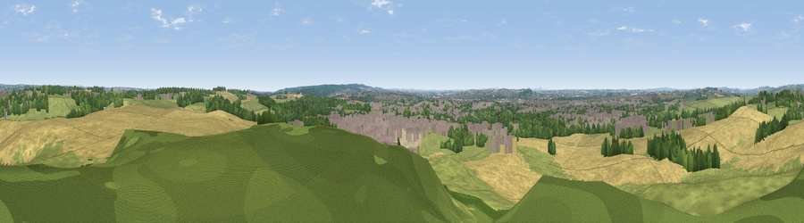

Viewpoint near Hopton
#26270 in England · top 30% of its area beats it · near Hopton · access?Where it is
The exact computed spot (SJ 94525 25125). Click the marker for map links.
Public access: no public right of way or access land is recorded at this exact spot — it may be on private land. Computed from Natural England's CRoW access layer and OpenStreetMap rights of way — not the legal definitive map. Always verify locally.
The view, rendered

A 360° render of this exact spot computed from the terrain model, tree cover and land cover — summer colours, afternoon light, calibrated against photographs of famous viewpoints. Real trees, hedges and buildings will differ in detail.
The panorama
Grey silhouette: terrain skyline in each direction (720 bearings, Earth curvature and refraction included). Dashed green: skyline with trees (+15 m) and buildings (+8 m) as obstacles. Blue strip: how far the ground is visible on each bearing.
Where the view opens
Wedge length = distance to the farthest visible ground on that bearing (vegetation-aware). Rings at 10, 25 and 50 km.
What fills the view
44% cropland · 29% grassland · 15% woodland · 12% built-up
Angular shares of the visible panorama (visual magnitude), not map area. Landscape diversity 0.55 (0–1 Shannon).
Key numbers
More beautiful places nearby
The staircase of upgrades: each row has a higher view potential than everything closer. Driving times are estimates from straight-line distance, calibrated against real road routing — check an actual route before setting out.
| Place | Direction | Drive | Score |
|---|---|---|---|
| Stafford Castle | WSW · 5 km | ~11 min | 60.6 |
| Wimblebury Hill | SSE · 16 km | ~28 min | 60.9 |
| Viewpoint near Beech | NW · 17 km | ~29 min | 62.9 |
| Viewpoint near Sheriffhales | WSW · 20 km | ~34 min | 63.6 |
| Viewpoint near Forton | WSW · 21 km | ~35 min | 63.8 |
| Viewpoint near Newport | WSW · 21 km | ~36 min | 66.4 |
| Viewpoint near Priorslee Village | WSW · 26 km | ~41 min | 70.4 |
| Viewpoint near Wootton | NE · 26 km | ~42 min | 74.8 |
52.82363, -2.08269 · source: screening · position refined by local search. Computed location — check access rights before visiting.